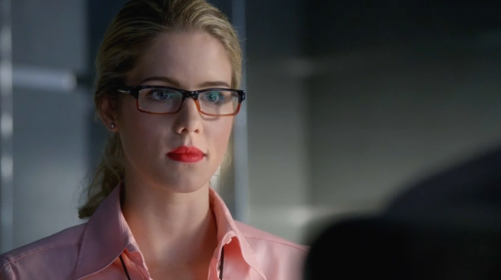

- home
- Oliver Queen/Arrow
- John Diggle
- Felicity Smoak
- Arsenal and Canary
Felicity Smoak

Felicity Smoak is a former member of Team Arrow, Oliver former executive
assistant and a former customer service member at Tech Village.
Felicity is the daughter of Mr. Smoak, and Donna Smoak, a friend and former
employee of Walter Steele, the good friend of John Diggle, Roy Harper and the
late Sara Lance. She is also Oliver Queen's girlfriend. She was the primary
contact between the Arrow and Starling City Police Department Captain Quentin
Lance. She is also the employee and ex-girlfriend of Ray Palmer. Felicity is
very intelligent and extremely proficient with electronics, which is why both
Walter and Oliver initially approached her for help in their separate problems.
After Oliver is shot by his mother, he retreats to Felicity's car, revealing his
identity to her and asking her to drive him to his warehouse instead of a
hospital. After she and Diggle save his life, she agrees to join his team, but
only until they find Walter. When Walter is found and rescued in "The Undertaking
", Felicity decided to remain with the team. After spending time with them,
Felicity decided to become a permanent member of the team as the tech expert.
After Oliver left the team, Felicity joined him and they went off to spend time
out of Starling City.
taken from "http://arrow.wikia.com/wiki/Felicity_Smoak"